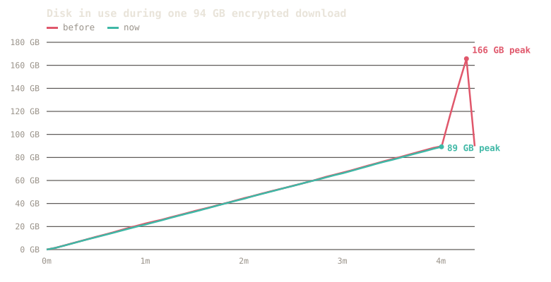

Dört istemci, yedi senaryo, özdeş donanım ve sağlayıcılar; sağlayıcı kayması birbirini götürsün diye iç içe çalıştırmalar. Ölçüt, kullanılabilir bir dosyaya geçen süre: indirildi, doğrulandı, çıkarıldı. Kazanamadığımız ayaklar da dahil.
Bu sayfada
Önce yöntem
pipelining_requests=8 aldı (1 gönderiyor, yani işlem hattısız; yalnızca o ayar 190 GB süresini 24m24s'ten 19m02s'e çekti), NZBGet ArticleCache/DirectWrite/DirectUnpack/ParQuick aldı, rustnzb belgelenmiş yapılandırmasını.Sayım
Çoğu karşılaştırma bir dosya seçer. Biz başka yerden başladık: insanların gerçekte indirdiği içerik hangi biçimde? En yoğun film ve dizi gruplarında 890.852 yayın, 1,6 milyon dosya ve 79,6 TB inceledik, sonra dosya adlarının yalnızca ima ettiğini doğrulamak için bin gerçek gönderinin arşiv başlıklarını okuduk. Gönderi başına değil bayt olarak sayıldı, çünkü bir milyon küçücük dosya tek bir büyük dosyadan daha az ağırlık taşır.
Bu, üzerinde çalıştığımız şeyi değiştirdi. Verinin %1,4'ünü taşıyan bir sıkıştırma yolunu iyileştirmenin pek anlamı yok, bu yüzden geri kalanını taşıyan ikisini iyileştirdik.
Şifreleme de eşit dağılmıyor. Boyutla birlikte artıyor:
| Yayın boyutu | Tüm verideki payı | Depolanmış | Şifreli |
|---|---|---|---|
| 1-5 GB | 29% | 94% | 2% |
| 5-20 GB | 39% | 97% | 2% |
| 20-60 GB | 20% | 67% | 33% |
| 60 GB üzeri | 12% | 51% | 49% |
Sıradan indirmeler neredeyse her zaman düz depolanmış arşivlerdir. Büyüklerde ise depolanmış ile şifreli arasında yazı tura gibidir. Aşağıda nzbfast'in her birini nasıl ele aldığı var.
Senaryo 1 · temiz, devasa
| nzbfast | NZBGet 26.2 | SABnzbd 5.0.4 | rustnzb 1.3.4 | |
|---|---|---|---|---|
| kullanılabilir dosyaya süre | 4m 33s | 7m 58s (+75%) | 19m 32s (+329%) | yok¹ |
| hattaki GB | 169.6 | 169.8 | 169.7 | 186.5 |
| zirve RSS | 1.4 GB² | 1.5 GB | 1.8 GB | 0.6 GB |
¹ rustnzb baytları taşımayı 5m 42s'de bitirdi, 186.5 GB çekmişti (herkesten %10 daha fazla hat) ama hiç çıkarılmış medya bırakmadı; bu gönderideki üst üste üçüncü başarısız turu. · ² nzbfast'in belleği işi değil, yapılandırılmış bütçesini izler: bu tur varsayılan otomatik bütçeyle çalıştı ve 1.4 GB'ta zirve yaptı; kasten devasa tutulmuş bir 64 GB bütçe yalnızca %4 kazandırır (4m 22s) ve 1 GB'a kelepçelendiğinde aynı 190 GB'lık iş yine tamamlanır (aşağıdaki az bellek merdivenine bak). Daha önceki Doğu Yakası turunda (~2.4–3 Gbps hat) aynı senaryo NZBGet +%30 ve SABnzbd +%111'e karşı 9m 00s çalıştı. Fark hat hızları boyunca korunur.
Senaryo 2 · fark boyutla büyür
Tek geçiş, indirme sonrası doğrulama/açma geçişi olmaması demektir, bu yüzden iş ne kadar büyükse, o kadar önde iner. Aynı makinede sıralı çalıştırmalar:
| İş | nzbfast | NZBGet | SABnzbd |
|---|---|---|---|
| 7.4 GB REMUX (Avrupa, 10 GbE) | 13.7 s | 17.3 s (+26%) | 19.0 s (+39%) |
| 35 GB gizlenmiş 4K (Avrupa) | 67 s | 108 s (+61%) | 285 s (+325%) |
| 87 GB 4K (Doğu Yakası) | 272 s | 370 s (+36%) | 708 s (+160%) |
| 97 GB boş diskte 87 GB (Avrupa) | 3m 08s | çalışamaz² | çalışamaz² |
| 190.6 GB (Doğu Yakası) | 9m 00s | 11m 43s (+30%) | 19m 02s (+111%) |
² Zirve ayak izleri (birimler + açılmış çıktı aynı anda, ~156 GB) 97 GB boş alanı aştı. Tek geçiş içerik boyutunun 1 katına ihtiyaç duyar: yalnızca zamanı değil, ihtiyaç duyduğun diski de yarıya indirir.
Senaryo 3 · gizlenmiş gönderi
| nzbfast | NZBGet | SABnzbd | rustnzb | |
|---|---|---|---|---|
| kullanılabilir dosyaya süre | 96 s | 153 s (+59%) | 259 s (+170%) | kullanılabilir dosya yok³ |
| zirve RSS | 1.55 GB | 3.7 GB | 8.8 GB | 3.6 GB |
³ rustnzb 119 s'de indirdi, işi Completed olarak işaretledi ve ham gizlenmiş birimleri gönderdi: yeniden adlandırma yok, çıkarma yok. nzbfast PAR2 meta verisinden gizliliği açtı ve akış içinde çıkardı, sıfır geri okuma bloğu.
Senaryo 4 · üçlü kuyruk
| nzbfast | rustnzb | NZBGet | SABnzbd | |
|---|---|---|---|---|
| kuyruk duvar süresi | 122 s | 136 s | 162 s | 277 s |
| hat boşta (<20 MB/s) | 2 s (2%) | 16 s (12%) | 0 s | 168 s (61%) |
Aynı sorunun üç biçimi: nzbfast'in kuyruk sonu örtüşmesi hattı uçtan uca meşgul tutar; NZBGet asla boşta durmaz ama eşzamanlı açarken ~%35 daha yavaş çalışır; SABnzbd hızlı indirir, sonra seri son işlem sırasında hattı zamanın %61'inde karanlık bırakır. Dayanıklılık çeşidinde (şifreli RAR başlıklı bir iş), SABnzbd'nin kuyruğu şifreli işte sıkıştı ve 3 işten yalnızca 1'i tamamlandı; nzbfast onu açık bir mesajla park etti ve gerisini bitirdi.
Dürüst sütun
Burada duran iki tur da yayınlanan sürümde yeniden ölçüldü ve artık ikisi de kayıp değil: hasarlı store-mode gönderisi bize artık 30 s'ye mal oluyor, NZBGet'in 38 s'sine karşı; yalnızca pariteden yeniden inşa ise 19 s yerine 9 s'de bitiyor, üstelik NZBGet'in aynı sürede dönüp hiçbir şey teslim etmediği bir turda. Bölümü silmek yerine burada bırakıyoruz: kayıplarımızın yeri burası ve bir sonraki turda çıkacak olan buraya konacak.
Senaryo 6 · onu RAM'den aç bırak
Aynı dört iş, 2 GB, 1 GB ve 256 MB'lık sabit bellek bütçelerinde yeniden çalıştırıldı: otomatik boyutlandırıcının bir 8 GB kutuda, bir 4 GB kutuda ve bir 2 GB NAS'ta seçeceği şey. Her ayak doğru, tam doğrulanmış, çıkarılmış bir dosya üretti; zirve RSS işi değil, bütçeyi izledi. Kullanılabilir dosyaya süre, 10 GbE hat:
| İş boyutu | bol RAM | 2 GB bütçe | 1 GB bütçe | 256 MB bütçe |
|---|---|---|---|---|
| 7 GB | 15 s | 15 s | 15 s | 15 s |
| 35 GB | 65 s | 70 s | 70 s | 65 s |
| 87 GB | 148 s | 206 s | 196 s | 180 s |
| 190 GB | 330 s | 427 s | 402 s | 411 s |
Büyük işlerdeki %20–40 fazlalık bir 10 GbE eseridir: dökülen bloklar yalnızca hat diski geçtiğinde zaman maliyeti getirir. Aynı 87 GB'lık iş aynı bütçelerde ~2.4 Gbps bir hatta −%1 ila +%7 ölçtü, gürültü. Tipik bir ev bağlantısında küçük bir bütçe herhangi bir iş boyutunda neredeyse bedavadır. Bir NAS profili (2 bağlantı, 256 MB bütçe) 35 GB'lık işi 0.4 GB zirve RSS'te bitirdi. Bir 2 GB NAS bunu çalıştırabilir. Başka hiçbir istemci bir bellek tavanı sunmaz bile.
Senaryo 7 · arşiv içinde arşivler
Gönderiler giderek daha sık iç içe geliyor: RAR içinde bir RAR, bir depolama arşivine sokulmuş bir 7z, katmanlardan bir merdiven, bir parola zinciri. Bu tur, operatöre ne kaldığını notlandırır. otomatik, her yükün elle hiç dokunulmadan, bayt bayt özdeş biçimde çıkarıldığı anlamına gelir; manuel ise istemcinin başarı bildirdiği ama çıktı dizininde kendin açasın diye bir iç arşiv bıraktığı anlamına gelir.
| biçim | nzbfast | SABnzbd | NZBGet | rustnzb |
|---|---|---|---|---|
| depolama RAR içinde depolama RAR | otomatik | otomatik | manuel | manuel |
| depolama RAR içinde sıkıştırılmış RAR | otomatik | otomatik | manuel | manuel |
| depolama RAR içinde 7z | otomatik | otomatik | manuel | manuel |
| 5 düzeyli merdiven, 6 yük | otomatik · 6/6 | manuel · 3/6 | manuel · 1/6 | manuel · 1/6 |
| parola zinciri, 3 şifreli düzey | otomatik · 3/3 | parola soruyor | parola soruyor | başarısız |
| otomatik tamamlama, on biçimin hepsi | 8/10 | 6/10 | 2/10 | 2/10 |
Geri döngü düzeneği, makine üretimi derlem, dört istemci de aynı makinede, içerik özetine göre notlandırıldı; böylece yükü yeniden adlandıran bir istemci de hakkını alır. İç katmanlar akış sırasında iç içelikten çözüldüğü için nzbfast diskte ~1.5 GB'lık tek bir kopya tutar; yaz-ve-aç istemcileri ~3 GB tutar ve nzbfast bu ayakları 4–8 sn'ye karşı 1–2 sn'de bitirir. Parola zincirinde her katmanın parolası, bir üstteki katmanın çıkardığı bir dosyada gelir: nzbfast onu okur ve üç düzeyin de kilidini açar; diğerleri durup senin yazmanı bekler. Otomatik tamamlayamadığı iki biçim bilerek sert notlandırıldı: varsayılan derinlik sınırının ötesindeki 10 düzeyli bir merdiven ve üç düzeyin üçünde de hasarlı bir gönderi. Her ikisinde de diğer tüm istemcilerden daha fazla yük kurtarır ama yarım kalmış bir işe başarı demek yerine sıfırdan farklı bir kodla çıkar; bu yüzden ikisi de burada başarısız sayılır.
Biçim 1 · verinin %84'ü
Üç gerçek yayın, her biri bir öncekinin bitmesini bekleyecek şekilde arka arkaya kuyruğa alındı. Bir kuyruk gerçekte böyle boşalır ve her işi başlatmanın maliyeti tam burada ortaya çıkar. Altı sağlayıcı, her istemci için aynı bağlantı sayısı, aynı makine ve aynı ağ.
nzbfast, NZBGet'ten 1,51 kat, SABnzbd'den 2,55 kat daha hızlı ve bu usenet'teki en yaygın biçimde.
Her istemci sunucu başına 8, 16 ve 32 bağlantıyla denendi ve kendi en iyi ayarıyla gösteriliyor, çünkü bir rakip asla kötü yapılandırma yüzünden kaybetmemeli. Kendi kurulumunuzu ayarlıyorsanız bilmeye değer: NZBGet 32 bağlantıda yaklaşık iki kat yavaşladı, SABnzbd de önceki testlerimizde aynı şekilde davrandı. Daha çok bağlantı daha çok hız demek değil. nzbfast tüm aralıkta düz kaldı, yani bu ayar sizi yanıltmaz.
Ayrıca her istemcinin dosyaları gerçekten üretip üretmediğini denetliyoruz, başarı bildirdiğinde sözüne inanmak yerine. Testlerimizde bir istemci her biri yaklaşık bir saniye süren üç tamamlanmış indirme bildirdi ve hiçbir şey yazmamıştı.
Biçim 2 · verinin %14'ü, 60 GB üzerindekilerin yarısı
Gerçek bir 94 GB şifreli yayında nzbfast artık diskinize 180 GB yerine 90 GB yazıyor ve ayrı bir kilit açma turu için duraklamak yerine indirme biter bitmez işi bitiriyor.
Şifreli arşivler tek geçişte halledemediğimiz son biçimdi. nzbfast kilitli veriyi diske yazmak, hepsini geri okumak, kilidini açmak ve yeniden yazmak zorundaydı. İki kat yazma, iki kat disk ve yayın büyüdükçe uzayan bir bekleme. Artık her parça geldiği anda açılıyor, böylece kilitli veri diske hiç ulaşmıyor.
| önce | şimdi | Değişim | |
|---|---|---|---|
| Diske yazılan | 179.8 GB | 90.1 GB | yarısı |
| Aynı anda en çok disk | 166 GB | 89.6 GB | %46 daha az |
| İndirmeden sonraki duraklama | 19.9 s | 0.6 s | kalktı |
| Toplam süre | 255.8 s | 241.4 s | %5,6 daha hızlı |
Aynı anda kullanılan en çok disk artık 89,6 GB, yani istediğiniz dosyanın tam boyutu. Şifreli bir indirme sırasında nzbfast'in ikinci bir kopya için yer istediği bir an artık yok.

Bir indirme sırasındaki disk kullanımı, beş saniyede bir ölçüldü. İki çizgi, indirmenin bittiği ana kadar birebir aynı. Sonra eski olan 166 GB'a tırmanıyor: bu, kilitli kopya hâlâ diskteyken bitmiş dosyayı yazan kilit açma turu. Yeni olan ise basitçe duruyor, çünkü yazdığı dosyanın kilidi zaten açıktı.
Bu neden önemli
Flash bellek yazıldıkça yıpranır. 94 GB'lık bir yayını indirmek diskinize 180 GB yazma maliyeti çıkarıyordu; artık 90 GB. Sabit diskli bir NAS'ta aynı değişiklik, her şifreli indirmenin sonundaki uzun tek iş parçacıklı turu ortadan kaldırıyor; bu tur daha yavaş bir makinede burada ölçtüğümüz 20 saniye yerine dakikalar sürer.
Bileşen düelloları
Çıkarma ve PAR2 bizim kendi yerel kodumuz, bu yüzden onları özdeş derlemler üzerinde alandaki rakiplere karşı tek başına da yarıştırıyoruz. Bir süre ancak çıktı kaynak yüke bayt bayt özdeş olduğunda sayılır.
Bir Apple M3 Ultra'da unrar 7.23, 7-Zip, bsdtar, unar ve akış yukarı rars crate'ine karşı nzbfast'in çıkarıcısı her biçimi kazanır ya da berabere kalır: 400 küçük dosya unrar'ın 0.66 s'sine karşı 0.13 s, solid 0.50'ye 0.87, şifreli 0.49'a 0.82, 128 MB sözlüklü bir RAR7 arşivi 0.71'e 0.92. 20 çekirdekli bir M1 Ultra'da ve 14 çekirdekli bir Intel dizüstünde yeniden çalıştırıldığında sonuç her biçimde geçerli kalır ve dizüstünde farklar açılır: paralel kod çözme yolları fazladan iş parçacıklarına ölçeklenir. Bildirilen her süre sha256 özdeş çıktı üretti.
Klasik par2cmdline'a, SIMD'li par2cmdline-turbo çatalına ve MultiPar'a karşı nzbfast, yarıştırılan her makinede en hızlı doğrulamaya ve en hızlı onarıma sahip. 20 çekirdekli masaüstü: temiz doğrulama 0.40 s'ye karşı turbo'da 1.08 ve klasikte 3.67; 101 hasarlı bloğun onarımı 1.26 s'ye karşı 2.61 ve 7.52. 14 çekirdekli dizüstü: doğrulama 1.26'ya karşı 1.48, onarım 2.57'ye karşı 3.62. Onarılan her dosya bayt bayt özdeş. Bir dürüst not: PAR2 üretmiyoruz (bir indiricinin buna ihtiyacı yok ve o ayak ParPar'ın).
Bir işin maliyeti
Tek geçiş iddiası hız kadar disk hakkındadır; işte iddia yerine ölçüm: iç içe koşular sırasında çalışma dizininin ulaştığı en yüksek nokta, saniyede iki kez örneklendi. Sonda bir kez okumak hiçbir şey söylemezdi, çünkü çıkarımdan sonra birimlerini silen bir istemci onları hiç yazmamış gibi görünürdü.
| biçim | nzbfast | NZBGet 26.2 | rustnzb 1.3.4 | SABnzbd 5.0.4 |
|---|---|---|---|---|
| store RAR içinde store RAR | 1538 | 1538 | 1774 | 3080 |
| sıkıştırılmış iç katman | 1536 | 1536 | 1674 | 3102 |
| RAR içinde RAR, derinlik 2 | 1536 | 1536 | 1714 | 3076 |
| store RAR içine sarılmış 7z | 1503 | 1536 | 1722 | 3102 |
Megabayt, düşük olan iyidir. NZBGet burada bizimle başa baş ve nedenini söylemek gerekir: DirectUnpack ve DirectWrite açık çalışıyor; her rakibi böyle yapılandırıyoruz ve bu biçimlerde diskte tek kopya için bu yeterli. SABnzbd iki tutuyor. Kalan fark, hattın kendisi için kurulduğu farktır: biz birimleri hiç maddileştirmiyoruz, dolayısıyla tepe değeri yükün kendisidir, yükün üstüne onu taşıyan arşiv değil.
Yetenek, mikro kıyaslamalar değil
| nzbfast | SABnzbd 5 | NZBGet 26 | rustnzb | Usenapp | Newsbin | |
|---|---|---|---|---|---|---|
| işlem hattı NNTP | evet | varsayılan kapalı | hayır | evet | - | - |
| indirme sırasında tam doğrulama | her blok | sonra | hızlı denetim | sonra | sonra | sonra |
| indirme sırasında çıkarma | akış içi, diskte birim yok | doğrudan açma⁴ | doğrudan açma⁴ | güvenilmez⁵ | hayır | hayır |
| N-GB gönderi için gereken disk | ~1×N | ~2×N | ~2×N | ~2×N | ~2×N | ~2×N |
| indirme öncesi tamamlanabilirlik kararı | blok kesinlikli | hayır | sağlık % | hayır | makale denetimi | hayır |
| sınırlı bellek (asla takas) | bütçeli | 9.3 GB @ 190 GB | önbellek ayarı | hayır | - | - |
| indirirken dosyayı herhangi bir noktada kontrol et | evet | hayır | hayır | hayır | sıralı | hayır |
| gömülü dizinleyici + poster duvarı | evet, anahtarsız | hayır | hayır | hayır | arama arayüzü | grup tarayıcısı |
| Sonarr/Radarr tak-çalıştır | SAB API + Newznab | yerel | yerel | kısmi | hayır | hayır |
| telefon uzaktan kumandaları (nzb360/LunaSea) | NZBGet RPC üzerinden | evet | evet | hayır | hayır | hayır |
| izleme listesi otomatik yakalama + yükseltmeler | gömülü | *arr üzerinden | *arr üzerinden | hayır | Watchdog | kurallar |
| tek, kendi kendine yeten ikili | evet | Python | evet | evet | .app | .exe |
| açık kaynak | GPL⁶ | GPL | GPL | evet | ücretli | ücretli |
| platformlar | mac/win/linux/docker | mac/win/linux | mac/win/linux | linux/win | yalnızca mac | yalnızca win |
⁴ Doğrudan açma yine de önce birimleri gerçekleştirir: 2× yazma ve 2× disk. ⁵ rustnzb turumuzda "Completed" olarak işaretli gizlenmiş birimleri gönderdi (açması ayrıca devre dışı bırakılmazsa RARLab unrar ile takılır). ⁶ GPL-3.0-or-later. Usenapp/Newsbin, indirici özellikleri olan tek platformlu ticari okuyuculardır; hızda yarıştıkları için değil, insanlar sorduğu için listelendiler.
Taşıma kanıtı